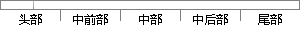

Electron 是一个基于 Chromium 的项目，可用于开发基于 Node.
片段位置图

相似结果|
相似片段 1： 也是基于 Chromium 项目开发出来的，它的核心思想是使用渲染引擎和 Chromium 浏览器的能力，同时加上对 Web 应用其他方面的支持，并使用 Linux 内核和其他第三方库构建一个基于浏览器的操作系统。
|
※ 片段修改建议 ※
近似词参考：- 开发：开辟
系统自动生成语句：Electron 是一个基于 Chromium 的项目，可用于开辟基于 Node.
注：本片段修改建议为系统自动生成，仅供参考。